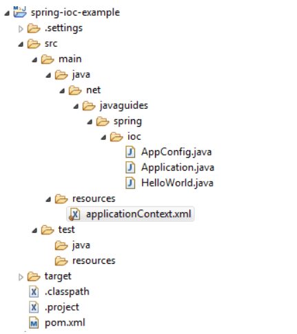

In this tutorial, we will explore a simple example to demonstrate the Spring IoC (Inversion of Control) Container with XML-based configuration metadata.
In a previous article, we discussed What is Spring IOC Container and how it works. Now, let's dive into a practical example to understand how to configure Spring beans using XML-based configuration metadata.
In this example, we will supply XML-based configuration metadata to the Spring IoC container.
Follow these steps to develop a Spring application:
Create a simple Maven project using your favourite IDE and refer to the Guide to Create a Simple Maven Project.
The below diagram shows a project structure for your reference:
Add the following content to the pom.xml file:
<project xmlns="http://maven.apache.org/POM/4.0.0"
xmlns:xsi="http://www.w3.org/2001/XMLSchema-instance"
xsi:schemaLocation="http://maven.apache.org/POM/4.0.0 http://maven.apache.org/xsd/maven-4.0.0.xsd">
<modelVersion>4.0.0
<groupId>net.javaguides.spring
<artifactId>spring-ioc-example
<version>0.0.1-SNAPSHOT
<properties>
<maven.compiler.target>17
<maven.compiler.source>17
</properties>
<dependencies>
<dependency>
<groupId>org.springframework
<artifactId>spring-context
<version>6.0.6
<dependency>
<dependencies>
<project>What is a Spring Bean?
A Spring bean is a Java object that is managed by the Spring container.
Create a HelloWorld Java class with the following content:
package net.javaguides.spring.ioc;
public class HelloWorld {
private String message;
public void setMessage(String message) {
this.message = message;
}
public void getMessage() {
System.out.println("My Message : " + message);
}
}Next, configure the HelloWorld class as a Spring bean using XML-based configuration:
<?xml version = "1.0" encoding = "UTF-8"?>
<beans xmlns="http://www.springframework.org/schema/beans"
xmlns:xsi="http://www.w3.org/2001/XMLSchema-instance"
xsi:schemaLocation="http://www.springframework.org/schema/beans
http://www.springframework.org/schema/beans/spring-beans.xsd">
<bean id="helloWorld" class="net.javaguides.spring.ioc.HelloWorld">
If you have a Spring bean configuration XML file in a standalone application, you can use
ClassPathXmlApplicationContextclass to load the file and get the container object.
package net.javaguides.spring.ioc;
import org.springframework.context.ApplicationContext;
import org.springframework.context.support.ClassPathXmlApplicationContext;
public class Application {
public static void main(String[] args) {
ApplicationContext context =
new ClassPathXmlApplicationContext("applicationContext.xml");
}
}The ApplicationContext interface provides the getBean() method to retrieve the bean
from the Spring container.
package net.javaguides.spring.ioc;
import org.springframework.context.ApplicationContext;
import org.springframework.context.support.ClassPathXmlApplicationContext;
public class Application {
public static void main(String[] args) {
ApplicationContext context =
new ClassPathXmlApplicationContext("applicationContext.xml");
HelloWorld obj = (HelloWorld) context.getBean("helloWorld");
obj.getMessage();
}
}My Message : Hello World!In this tutorial, we learned how to configure spring beans using XML-based configuration. We covered the steps to create a Maven project, add dependencies, configure beans, create a Spring container, and retrieve beans from the container.